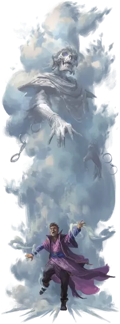

Призрачное облако
Spectral Cloud
Огромная Нежить, обычно нейтральная

Класс Доспеха 11
Хиты 189 (18к12 + 72)
Скорость 0 футов, летая 40 футов (парит)
| мод | спас | ||
|---|---|---|---|
| СИЛ | 24 | +7 | +7 |
| ЛОВ | 12 | +1 | +6 |
| ТЕЛ | 18 | +4 | +4 |
| мод | спас | ||
|---|---|---|---|
| ИНТ | 12 | +1 | +1 |
| МДР | 17 | +3 | +3 |
| ХАР | 16 | +3 | +8 |
Навыки Восприятие +8
Сопротивление урону некротическая энергия, холод; дробящий, колющий, рубящий от немагических атак
Иммунитет к урону звук, яд
Иммунитет к состояниям захват, испуг, истощение, окаменение, опутанность, отравление, очарование, паралич, сбивание с ног
Чувства пассивное Восприятие 18
Языки Общий, Великаний
Опасность 13 (10000 опыта)
Бонус мастерства +5
Особенности
Размытая форма. Броски атаки по призрачному облаку совершаются с помехой, если только атакующий не находится в пределах 15 футов от призрачного облака или призрачное облако недееспособно.
Бестелесное перемещение. Призрачное облако может перемещаться сквозь других существ и предметы, как если бы они были труднопроходимой местностью. Оно получает 5 (1к10) урона силовым полем, если оканчивает ход внутри предмета.
Действия
Мультиатака. Призрачное облако совершает две атаки Призрачным касанием.
Призрачное касание. Рукопашная атака оружием: +12 к попаданию, досягаемость 10 футов, одна цель. Попадание: 20 (3к8 + 7) урона силовым полем плюс 10 (3к6) урона некротической энергией. Если целью является существо, оно должно успешно совершить спасбросок Телосложения Сл 20, иначе его максимум хитов уменьшается на величину, равную полученному урону некротической энергией. Это уменьшение длится до тех пор, пока цель не окончит продолжительный отдых. Цель умирает, если этот эффект уменьшает максимум её хитов до 0.
Гуманоид, убитый этой атакой, немедленно поднимается в виде небольшого призрачного облака (используйте блок характеристик спектра [specter]). Небольшое призрачное облако действует как союзник своего создателя, но не находится под его контролем.
Леденящий ветер (перезарядка 5-6). Призрачное облако испускает поток сильного холодного ветра 60-футовой линией с шириной 10 футов. Каждое существо в этой области должно совершить спасбросок Телосложения Сл 20. В случае провала существо получает 38 (7к10) урона холодом и становится недееспособным на 1 минуту. Недееспособное существо может повторять спасбросок в конце каждого своего хода, оканчивая на себе действие эффекта в случае успеха. В случае успеха существо получает только половину этого урона.
Если спасбросок существа успешен или эффект для него заканчивается, это существо становится невосприимчивым к Леденящему ветру этого призрачного облака в течение следующих 24 часов.
Описание
Облачный великан, погибший в результате предательства или злополучного пари, иногда возвращается в виде призрачного облака. В то время как эта нежить кажется просто густым облаком или туманом, наблюдатели иногда могут заметить темную двуногую фигуру, скрывающуюся внутри. В центре облака становится понятен внешний вид фигуры: скелетообразный облачный труп великана.
Легенды предполагают, что облачные великаны, иногда стремятся к такой участи, вместо того чтобы смириться с окончанием своей естественно долгой жизни. В таких историях облачный великан подвергается ритуалу, в ходе которого его сердце пересаживается в облако, в результате чего тело великана растворяется, а его дух оживляет облако.